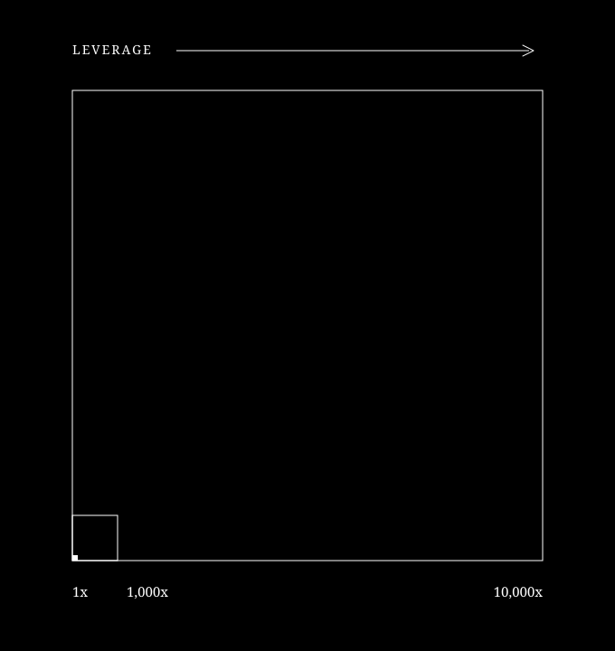
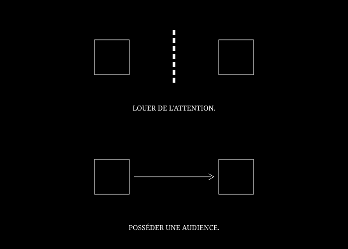
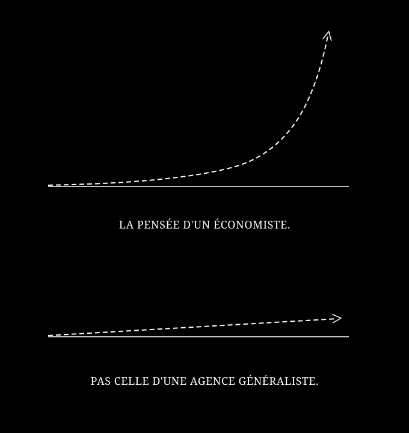

NOTRE VISION
Dans un monde de la finance où tout se réplique, une seule chose ne peut pas vous être retirée : ce que vous avez pensé, défendu, et publié en votre nom assez longtemps pour que vos idées deviennent indissociables de votre maison.
Utilisez le contenu comme levier.
C'est le premier principe que vous expliquez à vos clients concernant leur capital. Les intérêts composés exigent deux choses : un apport régulier et du temps.
Votre réputation obéit exactement à la même loi avec du contenu. Construite avec rigueur pendant des années, alimentée post après post, newsletter après newsletter, vidéo après vidéo, en votre nom, elle finit par constituer un actif qu'aucun pair, aussi brillant soit-il, ne peut rattraper s'il n'a rien publié de pertinent.
Car cet actif produit ce qu'il y a de plus décisif dans la finance d'aujourd'hui — une audience qui vous a choisi, et qui vous fait confiance.

Devenez votre propre média.
Mais cet actif ne se constitue que si rien ne s'interpose entre votre audience et vous.
Tant que vous publiez sur le canal d'un tiers, votre analyse côtoie celle de vos concurrents, et quelqu'un d'autre contrôle la relation avec ceux que vous cherchez à convaincre.
Ce que je vous propose, c'est de supprimer cet intermédiaire, et avec lui, toute la distance entre vous et ceux à qui vous vous adressez. Passer de la location d'attention, sans lien et sans mémoire, à la construction d'une audience directe, sans filtre, que personne ne peut vous retirer.
Cette audience n'a pas besoin d'être immense. 500 lecteurs assidus, à qui vous vous adressez semaine après semaine, décideront bien plus de la trajectoire de votre maison que 50 000 regards de passage qui croisent vos analyses par hasard dans la presse.

Pourquoi Plume de fond pour bâtir cet actif ?
Parce qu'il vous faut quelqu'un qui connaisse le fond de votre métier et qui parle le langage de vos équipes autant que celui de vos lecteurs.
Économiste de formation, je démontre sur LinkedIn depuis deux ans que des sujets financiers complexes trouvent un public fidèle dès lors qu'on les sert avec la précision d'un chercheur et la clarté d'un pédagogue.
J'ai créé Plume de fond pour mettre cette méthode au service de votre maison. Je pense avec vous, je mets vos idées à l'épreuve et je bâtis un flux éditorial précis, chiffré, pédagogique, qui vous appartient.
Posts, newsletters, rapports, scripts vidéo, je maîtrise chaque format parce que je maîtrise le fond.

Vos idées ont de la valeur.
Transformons-les en actif en leur donnant la plume qu'elles méritent.